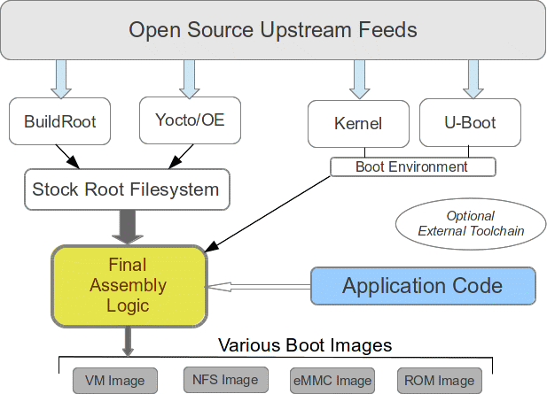
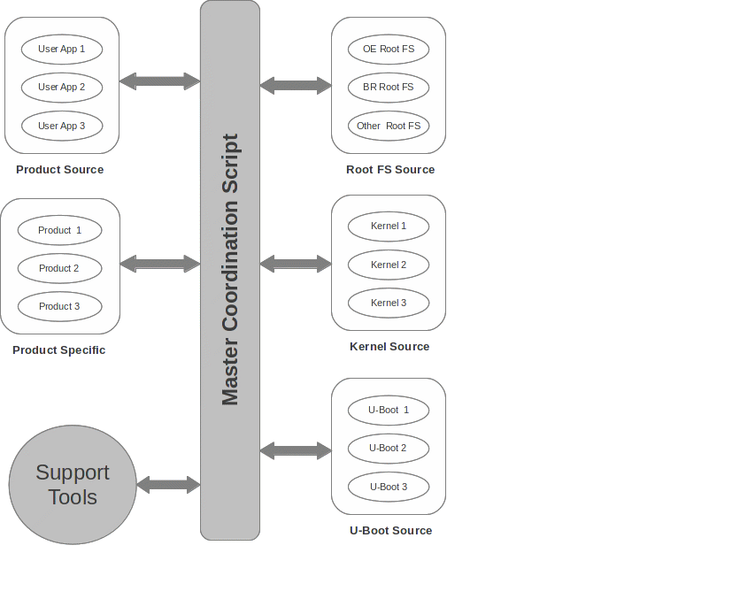

Managing Embedded Linux Deployment
Embedded Linux developers face numerous challenges from the
perspective of maintaining and deploying products developed with Open
Source Software:
- Products often have a several year cycle.
- Products often are based on multiple versions derived from the same product group.
- Products contain custom developer based software packages that not only will evolve over time, but need to work in harmony with the ever changing Open Source feeds.
- Vendors are constantly changing
their release strategy based on the trends of a given period of
time; this results in one set of releases in one form today, yet
down the road, different sets of releases based on market and
customer based requirements, as well as the never ending changes in
the Open Source Community.
Yet, at the core of it, all Embedded Linux products have the same
foundational components:
- A Root Filesystem that contains
all the necessary run-time executables and libraries to support the
product.
- A Linux Kernel, or set of Linux
Kernels, to support a particular processor and/or manufacturer
target hardware system.
- A Boot Loader, or set of Boot
Loaders, to support a particular processor and/or manufacturer
target hardware system.
- Developer based application
software that almost also requires customization of the Root
Filesystem on a per-customer basis.
The challenges are numerous:
- Open Source software is a
constantly evolving set of baselines that are updated from numerous
feeds and vendors over time.
- Packages that are available from
the community today may not be available in a year, or they simply
may have evolved to new revisions, with the older revisions no
longer supported.
- A plan must exist to maintain
current customer baselines, while allowing for the migration to
newer baselines over a multi-year cycle of a set of products. For
example, in 2017, 20 customers may be given a certain release, yet
in 2018, a migration has happened internally, and the new customers
of that year are give a release based on an entirely different
baseline of Open Source software.
- Critical to this is the ability to
continue to support existing customers without requiring them to
upgrade, while at the same time, able to migrate the internal
development base to a newer set of tools and baselines, and deploy
that to new customers.
Mission Critical Approaches
Far too often developers get lost in a sea of multiple choices,
each with their advantages, each with their disadvantages, and
through this, get “tunnel vision”, focused only on what tools are
available today, and how to work with them. This natural tendency
will get a product out the door this year, but will cause numerous
headaches on a multi-year product cycle.
The most omnipotent approach for any developer is to avoid tunnel
vision through building a Open Source Agnostic internal
baseline. Through this approach, all of the fears of tomorrow are
removed, and the developer is free to focus on what is most
important: Getting the product out the door.
This article focuses on how to approach Embedded Linux based
software development in a means that will survive a multi-year
product cycle that easily incorporates into it the never ending
changes in Open Source that surround them, but cannot be avoided in
any way.
Figure 1 depicts an approach that incorporates the primary components which are discussed in this article:

Figure 1 ‒ Primary Approaches
Available Tools and Packages
Before discussing in detail approaches to managing an Embedded
Linux project, let's take a look at some of the options for
developing a baseline:
- Open Embedded and Yocto:
Has a long history with vendors, has gone through a multi-year
evolution cycle. Stable, but has a significant spin-up curve.
- BuildRoot: Extremely
stable, as been around for many years, and is relatively easy to
use.
- Cross Compilers: Linaro,
Codesourcery and other vendors often provide pre-built tools which
contain optimizations for their particular product. Both BuildRoot
and OE/Yocto allow for usage of external tools, as well as for
building the toolchain from within.
Open Embedded
A robust set of tools that have been used by vendors such as
MontaVista, NXP, Wind River, Intel and others over the past several
years.
Advantages:
- Reasonable support from each vendor.
- Supports multi-platform, multi-target environments natively.
- Provides generation of an SDK to build against the libraries and header files externally.
Disadvantages:
- Somewhat complicated at first glance, and application code within the framework requires development of BitBake recipes.
- Slow build times without high-performance, multi-core machines.
BuildRoot
A robust set of tools that have been used by many organizations
for years, and continues to be extremely viable. However, generally
not supported by vendors.
Advantages:
- Extremely quick spin-up curve.
- Not commercialized by all Open Source Vendors.
Disadvantages:
- Limited support from processor vendors such as TI, Intel and Freescale.
- Does not easily support multi-processor, multi-target environments.
Cross Compilers and Tools
Tools like Open Embedded and BuildRoot do allow for a tool chain
to be built automatically, and this is a suitable approach. However,
it's important to evaluate whether vendor specific optimizations are
present in a present release of OE/Yocto or BuildRoot. It may be
prudent to see if the vendor provides their own pre-built toolchain,
and if so, determine if there is a significant reason for that (such
as optimization).
Design for Open Source Changes
Open Source will change: this is inevitable. What is valid
today may not be valid in a month. And most certainly, will not be
valid over a multi-year cycle, as packages that are available today
from upstream feeds may not necessarily be available over a
multi-year period.
Key foundational components to consider
are these:
- If possible, establish your upstream feeds in a company
specific GitHub account, preserving all branching and revision
history. This will allow for easy updates from each specific
upstream feed.
- Potentially avoid highly integrating company specific
application code with the chosen baseline, but rather, build it
outside of the baseline, installing it in the Root Filesystem during
build time. For example, instead of integrating application build
into OE/Yocto through recipes, use the SDK to build application code
with standard Makefiles. Or, with BuildRoot, simply use an external
toolchain, or the internally built toolchain to build the
application code outside the BuildRoot environment.
- Design a Build Environment that will allow easily tracking
upstream feeds, and integrating updates in with time.
Product Development ‒ A Practical Approach
The above sections outlined the issues and concepts from 8,000' ‒
A view from the sky. This following discussions provide a practical
set of approaches that will endure a multi-year, multi-platform,
multi-customer implementation strategy.
Let's revisit our foundational components, with a little more
detail on what matters:
- Root Filesystem: A good approach most often is to use
the Open Source tools, such as OE/Yocto or BuildRoot, to build a
stock Root Filesystem. This Filesystem, for all practical
purposes serves as a stock OS release, and most likely work without
modification on any customer specific hardware (at least getting to
a shell prompt and providing network support). With care, this
Filesystem will work in a multiple configurations:
- NFS mounting on target during development.
- Embedding in Flash/eMMC or other media for production.
- Leverage cleanly for specific upgrade schemes.
- Linux Kernel: A typical product lifetime will go
through more Kernel changes than radical Root Filesystem Changes.
Additionally, the Kernel will most likely require the most
modification from any stock release from vendors or upstream feeds,
simply do to custom hardware, customer drivers and enhancements
around the networking stack. Recommended approaches:
- Establish the Kernel in GitHub, preserving branching and
revision history from the upstream feed.
- Modify changes as needed for company specific needs on a
company specific branch; this allows for easy patch set generation
and application when migrating to a newer version of the Kernel.
- Boot Loader: Typically U-Boot. A general use-case
scenario is that it is made stable during board bring-up, and rarely
will change after that on a per-board basis. As a “run once”
component, it's primary purpose is to provide clean booting of the
Kernel and associated Root Filesystem. Additionally, it is often
highly integrated into any company specific Upgrade scheme, and will
require company specific modifications to support this.
- Application Code Approaches: A good way to view this
is how new features are installed into a stock Ubuntu installation;
the original, upstream Ubuntu base is never changed, but 'apt-get'
is utilized to “extend” the stock release. Whether using
Yocto/OE or BuildRoot, an ideal approach is to simply “install”
Application Code into the Root Filesystem generated by the
associated tool. Notes:
- This approach minimizes the modifications to the original
upstream feed of Yocto/OE or BuildRoot.
- It promotes development of packages that are modular for use
in upgrade schemes.
- It allows the Application Code to be built using standard
Makefiles, and then during development, easy installation into
either an NFS Root Filesystem, or using some sort of company
specific upgrade scheme.
- Final Packaging: Final packaging is taking the stock
Root Filesystem, the Kernel and then the Application Code and
assembling these into one or more “release” images; perhaps a VM
type release for testing or working with a Hypervisor, a eMMC based
image that contains the Boot Loader, Kernel, and Root Filesystem.
Typical flow would be:
- A build of a stock OS environment (Bootloader, Kernel and
Root Filesystem) is either done locally by the developer, or
provided as a stable release for the current development cycle.
- The Application Code is built.
- The final Root Filesystem is assembled starting with the
stock OS base, adding in the Application Code and any updates to the
/etc environment.
Through tying the above items together, we now have a “product
release” in place. Each component depends on the other components,
and together, they form a product. That product is good within the
framework of the “snapshot” of what is taken today in every
single sense: it works. It is manageable. And, it is not tied to
any changes in the Open Source community; whether in GIT or SVN, it's
a framework.
What holds it together is the product developer developed
scripting. That scripting is the orchestra of music, as it makes all
of these components come to together. And, it's that scripting that
allows us to work with the never ending changes from Open Source, as
through this, the product developer maintains full control over what
happens.
Figure 2 depicts this structure:

Figure 2 ‒ A Practical Implementation
Breaking down what is in Figure 2 is as follows:
- Root FS Source: This can
come from a variety of sources. The application developer need not
be concerned, this is provided by an OS Team; over time, this
will change, and there will be multiple sources for a Root FS, each
applied to a specific customer/product release environment.
- Kernel Source: This can
come from a variety of sources. A realistic approach to this is
that these various Kernels are vendor stabilized, without any
developer updates; they are a snapshot, and the number of versions
will grow with time.
- U-Boot Source: Could be a
boot loader from another vendor, but in keeping with mainstream,
it's best to use U-Boot. These are vendor supplied releases,
without any developer updates. A snapshot, and the number of
versions will grow with time.
The additional components in this figure are:
- User Applications: These
are vendor developed tools. They remain as agnostic to above items
as possible, but when require changes, are done through #ifdef
tied to a version.
- Product Specific Changes:
Contain patch sets to Kernel and Boot Loader, as well as updates
to Root Filesystem. Generally best to have a generic set of updates
which are product developer centric, but allow the option of
customization on a “per customer” basis.
- Support Tools: A set of
scripts, either Python or Shell based, which perform specific
functions based on each target build requirement.
- Master Coordinator:
Basically a script or Makefile that can be invoked to build a
particular platform. Typically, it would be provided with a Product
and Customer specific build target, and from that, invoke specific
scripting that that existed either in the Support Tools environment,
or in the Customer Specific environment to carry out the build. A
shell per say, as each end customer build should be able to be
handled stand-alone.
Summary
Designing a baseline that allows for keeping current with the Open
Source Community is a conscious decision, and has the following
characteristics:
By adopting this approach, the developer provides a stable means
to maintain a product over a multi-year cycle.